# 正文
进入页模式
首先更改内核的分页模式
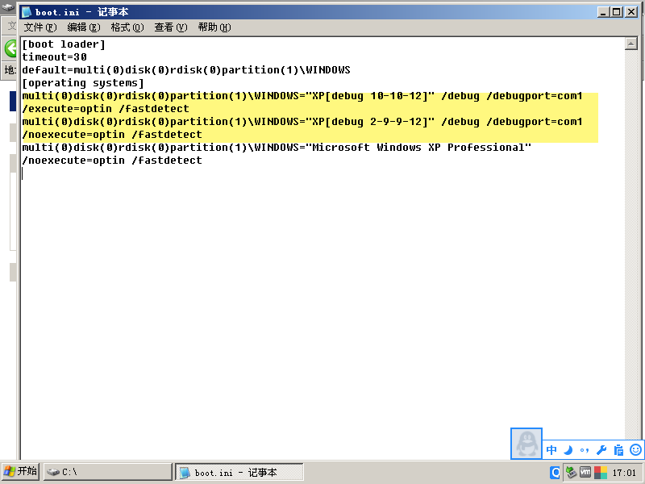
multi(0)disk(0)rdisk(0)partition(1)\WINDOWS="XP[debug 10-10-12]" /debug /debugport=com1 /execute=optin /fastdetect
将 noexecute 改成 execute，就改为了 10-10-12 分页模式
后面会学习 2-9-9-12 分页模式，默认的是 2-9-9-12 分页模式
multi(0)disk(0)rdisk(0)partition(1)\WINDOWS="XP[debug 2-9-9-12]" /debug /debugport=com1 /noexecute=optin /fastdetect
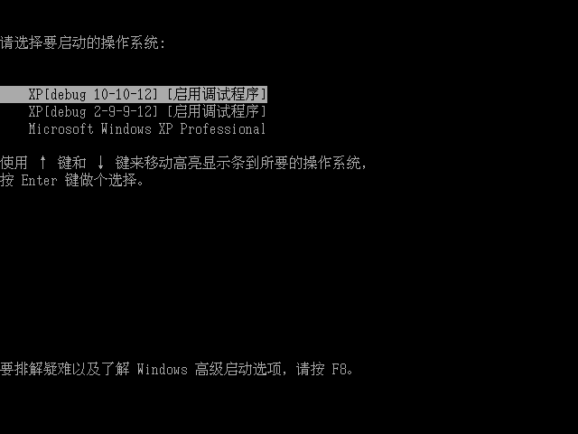
# 4GB 内存
每一个进程都有 4GB 内存，一个程序的最大寻址范围 4GB 怎么来的？
答案是 PTE 的前 20 位 + 线性地址的最后 12 位得到的寻址范围（32 位）就是 4GB
# 线性地址、有效地址、物理地址
如下指令：
MOV eax,dword ptr ds:[0x12345678]
其中，0x12345678 是有效地址
ds.Base + 0x12345678 是线性地址
线性地址挂载在了物理地址上
# CPU 如何寻找到物理地址
每个进程都有一个 CR3,(准确的说是都一个 CR3 的值，CR3 本身是
个寄存器，一个核，只有一套寄存器)
CR3 指向一个物理页，一共 4096 字节，如图：
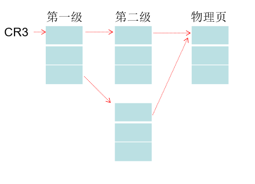
# 10-10-12
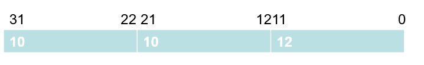
# 实验：寻找物理地址
创建一个 txt 程序并用 notepad.exe 打开，写入内容，CE 附加 notepad.exe 进程
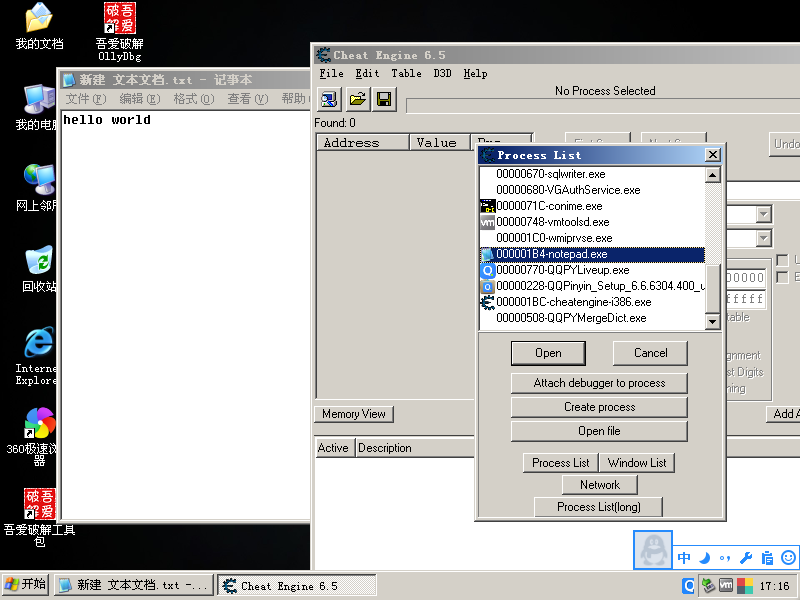
附加后配置选项，进行内存扫描
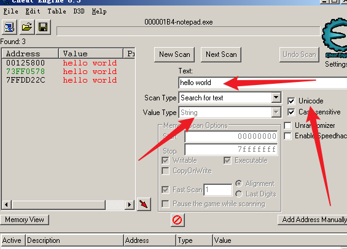
改变 txt 中的内容再次扫描，直到确认地址
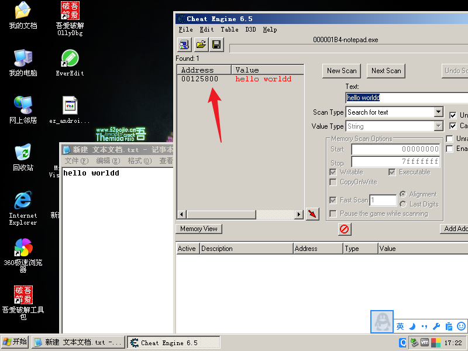
确认内存地址为 0x125800
开始拆分地址
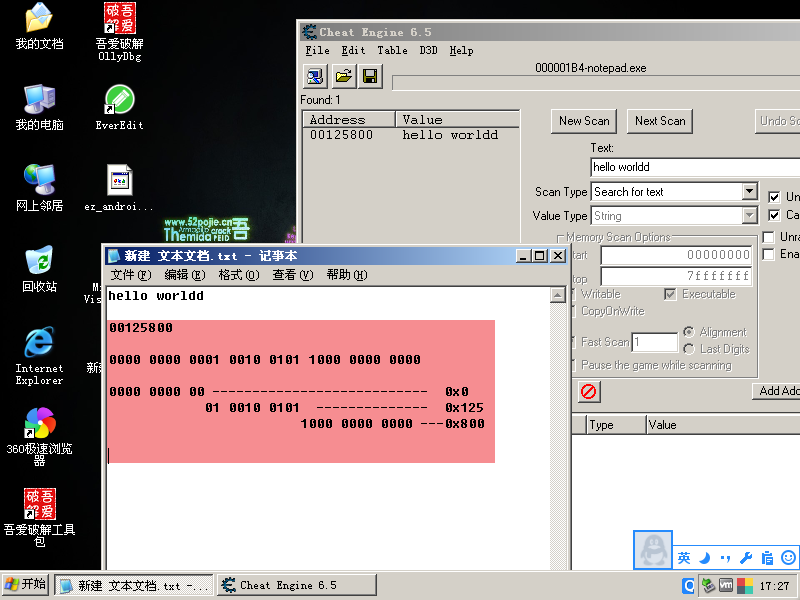
00125800
0000 0000 0001 0010 0101 1000 0000 0000
用的时候要乘以4
0000 0000 00 --------------------------- 0x0 * 4 = 0x0
01 0010 0101 -------------- 0x125 * 4 = 0x494
1000 0000 0000 ---0x800
找那个进程的物理页，物理地址就看哪个进程的 CR3，这里查看 notepad.exe 的 CR3: 3c932000
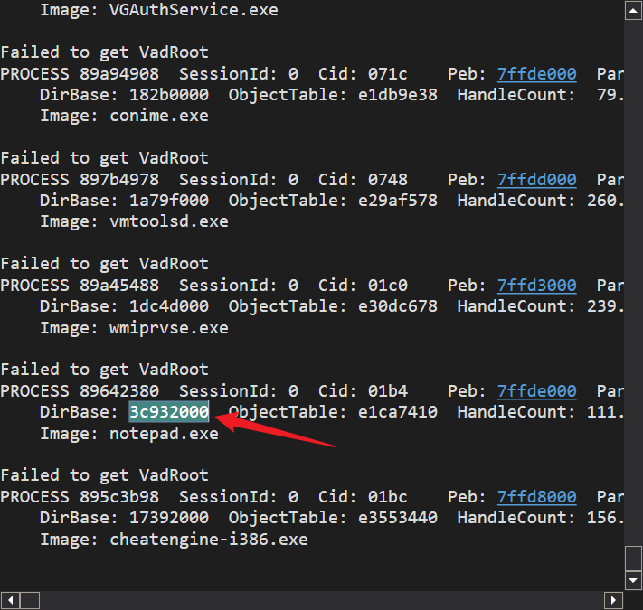
突然虚拟机卡住了 windbg 也没用，这俩不知道怪谁。只能重启了，数据也都变了。后面的截图有些误差，重要的是流程。
获得 cr3 后，在 windbg 中执行
!dd cr3 + （拆分出来的第一个 10 的值乘以 4）
!dd 3c932000 + 0
重启虚拟机后获取的数据是这个
000B04B8
10 0
10 B0
12 4B8
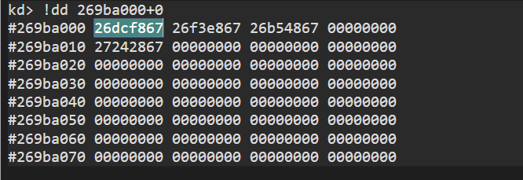
获取第一个值并把后三位去掉变成 0
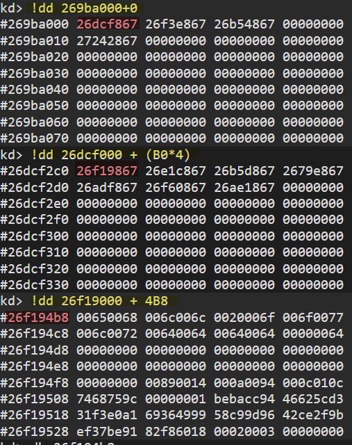
最后找到物理地址，查看一下
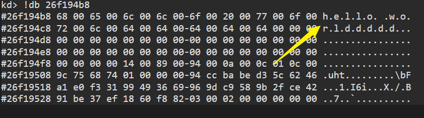
# 总结
这节主要是对分页模式有个模糊的轮廓。